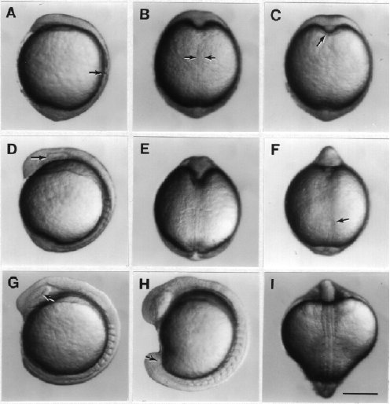
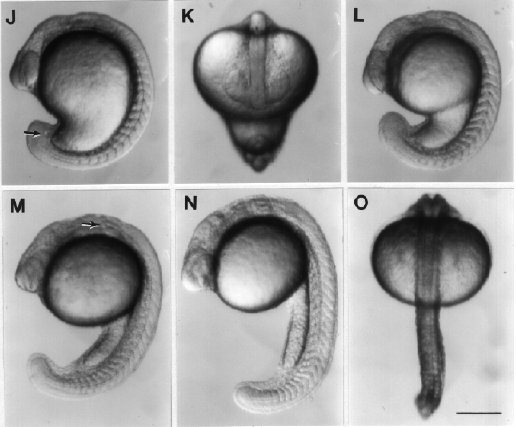

Modified from: Kimmel et al., 1955. Developmental Dynamics 203:253-310. Copyright © 1995 Wiley-Liss, Inc. Reprinted only by permission of Wiley-Liss, a subsidiary of John Wiley & Sons, Inc.
Fig. 15. Development during the segmentation period. Left side views, except where noted, with anterior up and dorsal to the left. A: 2-somite stage (10.7 h). Somite 2 is the only one entirely pinched off at this time, the arrow indicates its posterior boundary; somite 1 is just developing a clear anterior boundary at this stage. B: 2-somite stage, dorsal view. The notochord rudiment shows between the arrows, just anterior to the level of somite 1. C: 2-somite stage, ventral view. The arrow indicates the polster. D: 4-somite stage (11.3 h). Somite 1 now has an anterior boundary. The optic primordium begins to show (arrow). E: 4-somite stage, dorsal view, focus is on the notochord at the level of the boundary between somites 2 and 3. Note at the top how the brain rudiment and underlying axial mesoderm prominently indent the yolk cell in the midline. F: 5-somite stage (11.7 h), ventral view, focus is on the newly forming Kupffer's vesicle (arrow). G: 8-somite stage (13 h). The optic primordium has a prominent horizontal crease (arrow). The midbrain rudiment lies just dorsal and posterior to optic primordium. The segmental plate, developing paraxial mesoderm posterior to the somite row, is clearly delineated. H: 13-somite stage (15.5 h). Somites begin to take on a chevron shape. The yolk cell begins to look like a kidney-bean, heralding formation of the yolk extension. The tail bud becomes more prominent and Kupffer's vesicle shows from the side (arrow). I: 14-somite stage (16 h), dorsal view, and positioned so that the first somite pair is at the center. Note at the top the shape of the brain primordium, at the level of the midbrain. J: 15-somite stage (16.5 h). The arrow shows Kupffer's vesicle. K: 15-somite stage from a dorsal-view to show the optic primordia. Kupffer's vesicle is also nearly in focus. L: 17-somite stage (17.5 h). The otic placode begins to hollow. The yolk extension is now clearly delimited from the yolk ball as the tail straightens out. M: 20-somite stage (19 h). The arrow indicates the otic vesicle. N: 25-somite stage (21.5 h). The telencephalon is prominent dorsally, at the anterior end of the neuraxis. O: 25-somite stage, dorsal view. The hindbrain's fourth ventricle shows at the top. Scale bars: 250 µm.

Figure 15A-I

Figure 15J-O